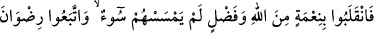
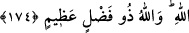

üzere sözleşmiştik, ne var ki bu sene kurak bir sene idi. Savaşabilmemiz için,
hayvanlarımızı otlatabileceğimiz, bol bol süt içebileceğimiz bir sene olması lâzım.
Onun için benim geri dönmem daha uygun olacak. Fakat Muhammed savaşa gelir de ben
gitmezsem, onun cür’eti artacak. Sen Medîne’ye git ve onları savaşa çıkmaktan
vazgeçir. Bunu başarırsan, sana tam on deve var!” dedi. Süheyl b. Amr da bu develere
kefil olmuştu. Nuaym da Medîne’ye gelmiş, müslümanların savaşa hazırlandığını
görmüş ve onlara:
“Bu isâbetli bir görüş değildir. Geçen sene yurdunuza geldiler de zarar vermedik bir
kişi bile bırakmadılar; yani korkup kaçanlardan başkası kurtulamadı. Size karşı o kadar
ordu toplamışlarken hâlâ üzerlerine gitmek akıl kârı mıdır? Üzerlerine giderseniz
tekiniz bile sağ dönemezsiniz!” demiş. Bu sözler bazı müslümanların kalbine tesir
etmiş, bundan haberdar olan Hz. Peygamber (s.a.):
“Canımı elinde tutan Zât’a yemin ederim ki, benimle birlikte tek bir kişi bile
gelmese, yine de oraya gideceğim.” buyurmuş ve hepsi de: “Allah bize yeter, O ne
güzel vekîldir.” diyen yetmiş süvari ile birlikte savaşmak üzere yola koyulmuş.[148] Bu
söz, onların îmanlarını artırdı, kendilerini yola koyulmaktan alıkoyamadı; bilakis,
Allah’a îmanları daha da güçlendi, itminânları arttı; İslâmî bir hamiyet gösterdiler;
niyetlerinde ihlâslı davrandılar ve: “Allah bize yeter. O, ne güzel vekîldir!” dediler.
174. Bunun üzerine, kendilerine hiçbir fenâlık dokunmadan, Allah’ın nîmet ve
keremiyle geri geldiler. Böylece Allah’ın rızâsına uymuş oldular. Allah büyük
kerem sahibidir.
Yani; düşmana karşı çıktılar, sözlerini yerine getirdiler, maksatlarına ulaşarak
Allah’dan gelen paha biçilmez büyük bir nîmetle geri döndüler. Bu nîmetten maksat;
âfiyet, îmanlarında sebât ve artış, düşmanların kendilerinden korkmasıdır.
“Kendilerine hiçbir kötülük dokunmadı”, başlarına hiçbir eziyet, ya da çirkin bir
durum gelmedi. “Allah’dan nîmet ve keremle” yani büyük bir ticâretle geri döndüler.
Rivâyet edilir ki: Hz. Peygamber (s.a.), Benî Kinâne’ye aid bir panayır yeri olan ve
her sene sekiz gün boyunca toplandıkları Küçük Bedir mevkîine ordusuyla geldi, fakat
orada bir tek Mekke müşriğine bile rastlamadı. Onlar da panayıra gittiler, yanlarındaki
azıklarını ve ticârî malları satıp bal ve üzüm aldılar, kâr ettiler, bir dirheme karşılık iki
dirhem kazandılar. Daha sonra sâlimen ve ganimete ermiş olarak Medîne’ye döndüler.
Ebû Süfyân ise Mekke’ye döndü.
Mekkeliler, bu orduya Sevîk ordusu adını taktılar: “Siz oraya savaşmaya değil, çorba
içmeye gitmişsiniz.” dediler. Müslümanlar bütün davranış ve sözlerinde, cesâret ve